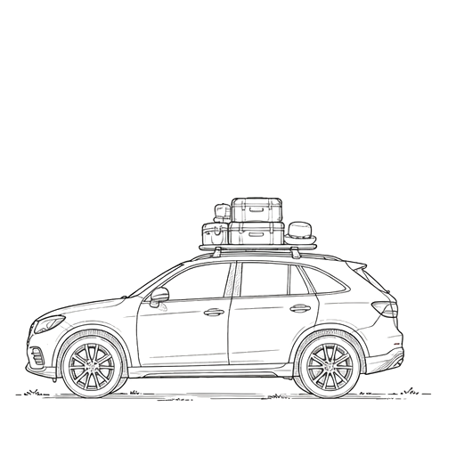

Travel

Wine country is worth the journey. Whether you’re flying across the country or making your way up the California coast, we hope you’ll take a little extra time to slow down, soak in the scenery, and enjoy everything this beautiful corner of California has to offer.
Flying
-
San Francisco International Airport (SFO)SFO offers the widest selection of domestic and international flights and is about 50 miles (roughly an 80-minute drive) from Sonoma, depending on traffic.
-
Sacramento International Airport (SMF)Locals’ top recommendation! Sacramento is a relaxed, easy-to-navigate airport with plenty of flight options and is about a 90-minute drive from Sonoma — about the same as SFO without navigating a major city.
-
Sonoma County Airport (STS – Santa Rosa)The closest airport to Sonoma, Santa Rosa is a convenient regional airport with limited but growing flight options. It’s about a 45-minute drive to Sonoma.
Driving & Getting Around

-
We recommend renting a car, both for getting to Sonoma and for exploring everything wine country has to offer. From charming town squares to world-class wineries and incredible restaurants, having a car gives you the most flexibility during your stay, and parking is free at The Lodge.
-
If you’d rather skip the rental car, rideshares are readily available throughout the area, and many hotels offer local transportation options.
-
The Lodge at Sonoma also offers a complimentary shuttle (in an adorable electric VW bus!) between the hotel and Sonoma Plaza, stopping near City Hall. Downtown Sonoma is full of amazing shops, restaurants, and tasting rooms.